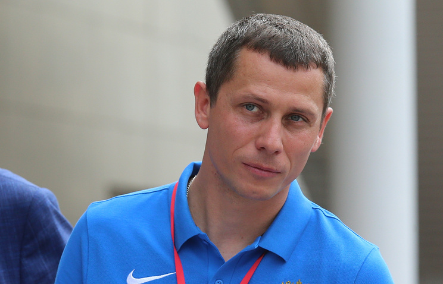
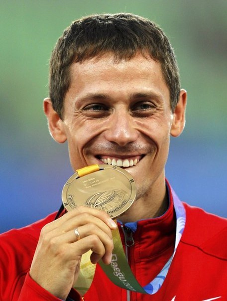

Главный тренер сборной России по Лёгкой атлетике
Борзаковский, Юрий Михайлович

Ю́рий Миха́йлович Борзако́вский (12 апреля 1981, Кратово, Раменский район, Московская область) — российский легкоатлет, олимпийский чемпион 2004 года, чемпион мира и трёхкратный чемпион Европы, заслуженный мастер спорта России (2001), главный тренер сборной России по лёгкой атлетике (с 2015 года). Один из шести олимпийских чемпионов от России в мужской лёгкой атлетике и единственный — в беговых дисциплинах. Почётный гражданин города Жуковский Московской области.
Карьера
Выпускник Московской государственной академии физической культуры. Чемпион России среди молодёжи (1997) в беге на 800 м, победитель Всемирных Юношеских игр (1998), многократный чемпион России в беге на 800 м (1999—2009), рекордсмен России в беге на 400 и 800 м среди юниоров (1999), рекордсмен Европы и России в беге на 800 м среди молодежи (2001), рекордсмен мира, Европы и России среди молодежи в беге на 800 м в помещении (2001), рекордсмен России в беге на 600 м в помещении (2010), 800 м (2001), 800 м в помещении (2001) и 1000 м в помещении (2008), обладатель кубка Европы (1999), чемпион Европы среди юниоров (1999), двукратный победитель зимнего чемпионата Европы в беге на 800 м (2000 и 2009), чемпион Европы среди молодежи в беге на 400 м (2001), победитель зимнего чемпионата мира в беге на 800 м (2001), олимпийский чемпион 2004 года в беге на 800 м. Основной дистанцией Борзаковского, на которой он с 2000 года выступает на уровне мировой элиты, являются 800 м. Его отличительная тактика — держаться первые 500 м позади группы, а потом вырываться вперёд благодаря своим чрезвычайно сильным спринтерским качествам. В 19-летнем возрасте Юрий выступил на Олимпийских играх 2000 года в Сиднее, где вышел в финальный забег, но стал седьмым. В 2001 году он стал чемпионом мира в зале, а на чемпионате мира 2003 года в Париже — серебряным призёром, уступив 0,03 сек алжирцу Джабиру Саиду-Гуэрни. Своего самого большого успеха Юрий достиг на Олимпийских играх 2004 года в Афинах, став олимпийским чемпионом, опередив в финале южноафриканца Мбулаени Мулаудзи и рекордсмена мира Уилсона Кипкетера из Дании. На чемпионате мира 2005 года в Хельсинки Борзаковский вновь завоевал серебряную медаль, уступив Рашиду Рамзи из Бахрейна. На чемпионате мира 2007 года в Осаке Юрий занял 3-е место. На Олимпийских играх 2008 года в Пекине занял 3-е место в полуфинале и, таким образом, не попал в финальный забег. Сам он это объяснил акклиматизацией и ошибками в предолимпийской подготовке. В 2009 году второй раз в карьере выиграл золото чемпионата Европы в помещении, в 2011 году на чемпионате мира в Тэгу стал третьим на 800-метровке, уступив рекордсмену мира кенийцу Дэвиду Рудише и Абубакеру Каки из Судана. В 2012 году впервые в карьере выиграл летний чемпионат Европы, победив в Хельсинки. Член сборной команды России с 1998 года. Выступает за ВСФО «Динамо» (Московская область). Живёт в г. Жуковский (Московская область). Женат, воспитывает двух сыновей. 8 ноября 2013 года атлет объявил о завершении карьеры Однако, позднее опроверг информацию о завершении карьеры и заявил, что через месяц-два начнёт подготовку к предстоящему летнему сезону. 23 июля 2014 года, вновь объявил о уходе из профессионального спорта, но заверил что останется в легкой атлетике в качестве педагога и руководителя «шиповки юных».[источник не указан 1211 дней] С 6 апреля 2015 года Юрий Борзаковский - главный тренер сборной России по легкой атлетике.
Достижения
|
Награды |
|
2001: Golden Gala — 1.44,02 |
|
2001: Meeting Gaz de France — 1.43,76 |
|
2001: Herculis — 1.43,17 |
|
2001: Memorial Van Damme — 1.42,47 |
|
2003: Meeting Gaz de France — 1.43,94 |
|
2004: Golden Gala — 1.44,19 |
|
2005: Golden Gala — 1.44,81 |
|
2005: Bislett Games — 1.44,18 |
|
2005: Memorial Van Damme — 1.44,54 |
| 2009: Bislett Games — 1.44,42 |